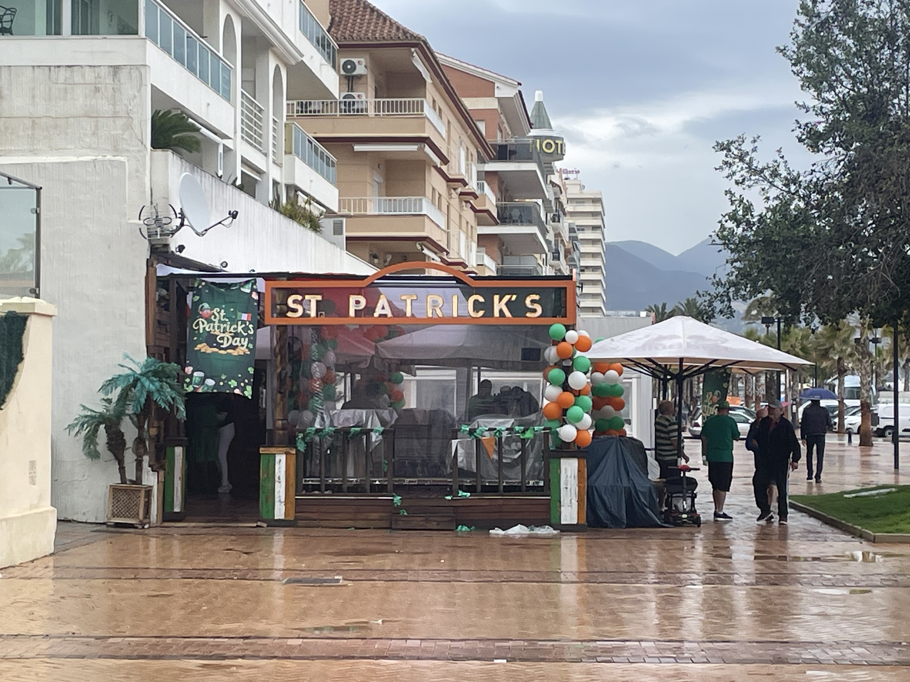

Madrid —
The Bernabéu, Museums & Genuine Charm
Nicola visited Madrid with a friend and did something she'd never planned to do — took the Real Madrid Bernabéu stadium tour. She had no particular interest in football. But the tour was genuinely fascinating — the energy, the passion, the history. Madrid itself surprised us. It's less famous than Barcelona but more charming, with better food, less exhausting energy and real Spanish character.


A stadium tour changes your mind
Madrid is easier than Barcelona. That's the first thing you notice. The pace is slower, the crowds are lighter, and there's genuine charm in the smaller streets and squares. The food is better. The people feel more relaxed. And the Bernabéu tour — which we booked basically as a random activity — turned out to be genuinely extraordinary.
Even if you have absolutely no interest in football, the tour gives you access to something that matters deeply to millions of people. Standing in the tunnel where players walk out, seeing the dressing rooms, understanding the scale of the place — it's surprisingly moving.
Even without football interest, the stadium tour is genuinely extraordinary. Book in advance. The tunnel, the dressing rooms, the scale of it — it matters to millions and you understand why.
One of Europe's great art museums. Goya, Velázquez, Bosch. Plan a full morning or afternoon. Free entry in the evening.
Spain's official royal residence — extraordinarily grand with 2,000+ rooms. Significant tourist destination but genuinely impressive.
Beautiful central park with a lake, gardens and museums. Brilliant for slowing down and breathing in Madrid.
Food market with tapas bars, wine and street food. Touristy but good — go early or late to avoid crowds.
Historic central squares. Puerta del Sol is the kilometre zero point for Spanish roads. Plaza Mayor is surrounded by cafés and atmosphere.
Virtual Madrid
Take a Drive From Home virtual drive through Madrid — explore the Bernabéu, Puerta del Sol, and the city streets.
Find accommodation in Madrid
From budget hostels to luxury hotels. Puerta del Sol and Plaza Mayor are central but touristy. Malasaña and Chueca neighbourhoods are more local.
Disclosure: This is an affiliate link. If you book through it we may earn a small commission at no extra cost to you.